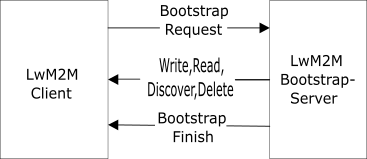

Bootstrap¶
To enable the Bootstrap Interface on the client, IOWA must be built with the flag LWM2M_BOOTSTRAP. Furthermore to create a LwM2M Bootstrap Server, the flag LWM2M_BOOTSTRAP_SERVER_MODE must be set. Note: This flag can be set with LWM2M_SERVER_MODE, there is no conflict.
Overview¶
The Bootstrap mode is used to add one or more LwM2M Server Account into the LwM2M Client.
IOWA currently supports the following Bootstrap mode:
- Factory Bootstrap
- Client initiated Bootstrap

Bootstrap Mode¶
Factory Bootstrap¶
The LwM2M Client has, in this mode, already the LwM2M Server Account(s) configured. This mode does not require the LwM2M Client to connect to a LwM2M Bootstrap Server if the LwM2M Server accounts contain at least a LwM2M Server Information.
Client initiated Bootstrap¶
If no Server have been configured and a Bootstrap Server is supplied, the Client will connect to the Bootstrap Server to obtain the connection information of at least one Server.
If the Client needs to connect to the Bootstrap Server with security, the keys need to be preloaded during Factory setup.
Flow¶
Bootstrap Request¶
After Client booting, the Client sends a Bootstrap Request operation to the preloaded Bootstrap Server.
On Bootstrap Request, the Bootstrap Server starts provisioning the Client with new LwM2M Server Accounts.
Getting Bootstrap Information¶
A typical client configuration flow is:
- Delete everything on the Client by sending a Delete operation on URI
/, - Optional step: Write a new LwM2M Bootstrap Server Account with Write operation on URI
/0, - Write at least one LwM2M Server Account with Write operation on URI
/0and/1.
Writing a LwM2M Bootstrap Server Account is recommended. If the Client is unable to connect to the Server, it can fall back to Bootstrap mode.
Instead of writing manually the Object Instance through Write operation, IOWA provides for the LwM2M Bootstrap Server high level operations:
- Add Bootstrap Server: add a [
Security Object][Security Object] Instance, - Remove Bootstrap Server: add the [
Security Object][Security Object] Instance associated to the Bootstrap Server, - Add Server: add a [
Security Object][Security Object] Instance and a [Server Object][Server Object] Instance, - Remove Server: remove the [
Security Object][Security Object] Instance and the [Server Object][Server Object] Instance associated to the Server.
These high level operations automatically provision the Resources of the Objects without the need to know how the Objects are structured.
Bootstrap Finish¶
Once the LwM2M Server Account have been provisioned, the Bootstrap Server sends a Bootstrap Finish operation to start the Bootstrap Consistency check.
The Bootstrap Consistency checks if the information provided is correct before exiting the Bootstrap mode. If the information is incorrect, an error is sent back to the Bootstrap Server by the Client to inform that the LwM2M Server Account loaded is not consistent.
Bootstrap Consistency can fail for the following reasons:
- No Server Account provided,
- Only one Bootstrap Server Account provided without Server Account,
- Server URI requires a secured connection but no Security information is provided,
- Server URI requires a non secured connection but Security information is provided,
- Server URI requires a specific binding but the Resource Binding (ID: 7) of the [
Server Object][Server Object] is different, - Security information is not consistent across the Resources Security Mode (ID: 2), Public Key or Identity (ID: 3), Server Public Key (ID: 4) and Secret Key (ID: 5) of the [
Security Object][Security Object].
If the Bootstrap Consistency passed, the Client will respond with no error to the Bootstrap Finish operation.
Server Registration¶
Once the Bootstrap Consistency is done without error, the Client disconnects from the Bootstrap Server and starts a Registration to the loaded Server(s).
If the Client does not get a response from the Server and if a Bootstrap Server is configured, the Client will fall back to Bootstrap mode.
Notes¶
IOWA Client (without Security)¶
The Factory mode is supported through the API: iowa_client_add_bootstrap_server() and iowa_client_add_server().
Below is an example indicating how to to provision the Bootstrap Server and start the Client initiated Bootstrap. Be careful, if a Server is also configured, the Client will not go to Bootstrap mode and instead go to Registration mode on the configured Server.
#include "iowa_client.h"
static void prv_eventCallback(iowa_event_t *eventP,
void *userData,
iowa_context_t contextP)
{
switch(eventP->eventType)
{
case IOWA_EVENT_REG_UNREGISTERED:
printf("Server (short ID: %d): Unregistered\r\n", eventP->serverShortId);
break;
case IOWA_EVENT_REG_REGISTERING:
printf("Server (short ID: %d): Registering\r\n", eventP->serverShortId);
break;
case IOWA_EVENT_REG_REGISTERED:
printf("Server (short ID: %d): Registered with lifetime %ds\r\n", eventP->serverShortId, eventP->details.registration.lifetime);
break;
case IOWA_EVENT_REG_UPDATING:
printf("Server (short ID: %d): Registration updating\r\n", eventP->serverShortId);
break;
case IOWA_EVENT_REG_FAILED:
printf("Server (short ID: %d): Registration failed.\r\n", eventP->serverShortId);
break;
case IOWA_EVENT_BS_PENDING:
printf("Server (short ID: %d): Bootstrapping\r\n", eventP->serverShortId);
break;
case IOWA_EVENT_BS_FAILED:
printf("Server (short ID: %d): Bootstrap failed\r\n", eventP->serverShortId);
break;
case IOWA_EVENT_BS_FINISHED:
printf("Server (short ID: %d): Bootstrap finished\r\n", eventP->serverShortId);
break;
default:
// Do nothing
break;
}
}
int main(int argc,
char *argv[])
{
iowa_context_t iowaH;
iowa_status_t result;
/******************
* Initialization
*/
iowaH = iowa_init(NULL);
iowa_client_configure(iowaH, "IOWA_Client", NULL, prv_eventCallback);
iowa_client_add_bootstrap_server(iowaH,
"coap://localhost:5783",
IOWA_SEC_NONE);
/******************
* "Main loop"
*/
do
{
// Run for 4 seconds
result = iowa_step(iowaH, 4);
} while (result == IOWA_COAP_NO_ERROR)
iowa_client_remove_bootstrap_server(iowaH);
iowa_close(iowaH);
return 0;
}
Once the Client starts:
- On first step loop, the
iowa_event_callback_tcallback is called to inform Bootstrap mode is beginning with eventIOWA_EVENT_BS_PENDING, - When the Bootstrap Finish is received and if the Bootstrap Consistency is passed, the event callback is called with event
IOWA_EVENT_BS_FINISHED, - After that the event callback gets called with event
IOWA_EVENT_REG_REGISTERINGto report that the Client is registering to the Server.
If the Client is not able to register to the Server, the event callback is called with IOWA_EVENT_REG_FAILED and depending if a Bootstrap Server is configured, the Client:
- Automatically falls back to Bootstrap mode if a Bootstrap Server is configured,
- Exits the step loop with
IOWA_COAP_503_SERVICE_UNAVAILABLEif no Bootstrap Server is configured.
The Bootstrap can fail (event IOWA_EVENT_BS_FAILED) when no command is received from the Bootstrap Server during a certain amount of time.
IOWA Client (with Security)¶
The previous example can be extended to support the Security. This example serves just to demonstrate how to use IOWA security API. For instance, a better way could be to use a Secure element to store the security keys.
For this purpose, two structures are added to store the keys by Server Account: security_t.serverUri. The implementation uses the concept of Linked List with the help of IOWA API: [IOWA_UTILS_LIST_ADD()][IOWA_UTILS_LIST_ADD] and [IOWA_UTILS_LIST_REMOVE()][IOWA_UTILS_LIST_REMOVE].
typedef struct security_data_t_
{
struct security_data_t_ *next;
iowa_security_data_t securityData;
char *serverUri;
} security_t;
typedef struct
{
security_t *security;
} client_data_t;
The main is updated to pass the data security data structure:
#include "iowa_client.h"
#define SERVER_URI "coaps://localhost:5784"
#define PSK_CLIENT_IDENTITY "IOWA_CLIENT"
#define PSK_CLIENT_KEY_LENGTH 10
#define PSK_CLIENT_KEY {0x30, 0x31, 0x32, 0x33, 0x34, 0x35, 0x36, 0x37, 0x38, 0x39}
int main(int argc,
char *argv[])
{
iowa_context_t iowaH;
iowa_status_t result;
client_data_t clientData;
iowa_security_data_t securityData;
unsigned char psk[PSK_CLIENT_KEY_LENGTH] = PSK_CLIENT_KEY;
/******************
* Initialization
*/
memset(&clientData, 0, sizeof(client_data_t));
// Add the Bootstrap Security key to the linked list
memset(&securityData, 0, sizeof(iowa_security_data_t));
securityData.securityMode = IOWA_SEC_PRE_SHARED_KEY;
securityData.protocol.pskData.identityLen = strlen(PSK_CLIENT_IDENTITY);
securityData.protocol.pskData.identity = iowa_system_malloc(securityData.protocol.pskData.identityLen);
memcpy(securityData.protocol.pskData.identity, PSK_CLIENT_IDENTITY, securityData.protocol.pskData.identityLen);
securityData.protocol.pskData.privateKeyLen = PSK_CLIENT_KEY_LENGTH;
securityData.protocol.pskData.privateKey = iowa_system_malloc(PSK_CLIENT_KEY_LENGTH);
memcpy(securityData.protocol.pskData.privateKey, psk, PSK_CLIENT_KEY_LENGTH);
iowa_system_security_data((uint8_t *)SERVER_URI, strlen(SERVER_URI), IOWA_SEC_CREATE, &securityData, &clientData);
// Initialize IOWA
iowaH = iowa_init(&clientData);
iowa_client_configure(iowaH, "IOWA_Client", NULL, NULL);
iowa_client_add_bootstrap_server(iowaH, SERVER_URI, IOWA_SEC_PRE_SHARED_KEY);
/******************
* "Main loop"
*/
do
{
// Run for 4 seconds
result = iowa_step(iowaH, 4);
} while (result == IOWA_COAP_NO_ERROR)
iowa_client_remove_bootstrap_server(iowaH);
iowa_close(iowaH);
// Remove the Bootstrap Security key
iowa_system_security_data((uint8_t *)SERVER_URI, strlen(SERVER_URI), IOWA_SEC_DELETE, NULL, &clientData);
return 0;
}
And iowa_system_security_data() is expanded with the handle of IOWA_SEC_CREATE and IOWA_SEC_DELETE to support adding and removing keys by the Bootstrap Server.
iowa_status_t iowa_system_security_data(const uint8_t *peerIdentity,
size_t peerIdentityLen,
iowa_security_operation_t securityOp,
iowa_security_data_t *securityDataP,
void *userDataP)
{
client_data_t *clientDataP;
clientDataP = (client_data_t *)userDataP;
switch (securityOp)
{
case IOWA_SEC_READ:
{
security_t *securityP;
securityP = clientDataP->security;
while (securityP != NULL
&& memcmp(securityP->serverUri, peerIdentity, peerIdentityLen) != 0)
{
securityP = securityP->next;
}
if (securityP == NULL)
{
return IOWA_COAP_404_NOT_FOUND;
}
securityDataP->securityMode = securityP->securityData.securityMode;
switch (securityDataP->securityMode)
{
case IOWA_SEC_PRE_SHARED_KEY:
// Copy the identity
securityDataP->protocol.pskData.identity = securityP->securityData.protocol.pskData.identity;
securityDataP->protocol.pskData.identityLen = securityP->securityData.protocol.pskData.identityLen;
// Copy the private key
securityDataP->protocol.pskData.privateKey = securityP->securityData.protocol.pskData.privateKey;
securityDataP->protocol.pskData.privateKeyLen = securityP->securityData.protocol.pskData.privateKeyLen;
break;
case IOWA_SEC_CERTIFICATE:
// Copy the CA certificate
securityDataP->protocol.certData.caCertificate = securityP->securityData.protocol.certData.caCertificate;
securityDataP->protocol.certData.caCertificateLen = securityP->securityData.protocol.certData.caCertificateLen;
// Copy the certificate
securityDataP->protocol.certData.certificate = securityP->securityData.protocol.certData.certificate;
securityDataP->protocol.certData.certificateLen = securityP->securityData.protocol.certData.certificateLen;
// Copy the private key
securityDataP->protocol.certData.privateKey = securityP->securityData.protocol.certData.privateKey;
securityDataP->protocol.certData.privateKeyLen = securityP->securityData.protocol.certData.privateKeyLen;
break;
case IOWA_SEC_RAW_PUBLIC_KEY:
// Copy the X public key
securityDataP->protocol.rpkData.publicKeyX = securityP->securityData.protocol.rpkData.publicKeyX;
securityDataP->protocol.rpkData.publicKeyXLen = securityP->securityData.protocol.rpkData.publicKeyXLen;
// Copy the Y public key
securityDataP->protocol.rpkData.publicKeyY = securityP->securityData.protocol.rpkData.publicKeyY;
securityDataP->protocol.rpkData.publicKeyYLen = securityP->securityData.protocol.rpkData.publicKeyYLen;
// Copy the private key
securityDataP->protocol.rpkData.privateKey = securityP->securityData.protocol.rpkData.privateKey;
securityDataP->protocol.rpkData.privateKeyLen = securityP->securityData.protocol.rpkData.privateKeyLen;
break;
default:
break;
}
break;
}
case IOWA_SEC_CREATE:
{
security_t *newSecurityP;
newSecurityP = iowa_system_malloc(sizeof(security_t));
if (newSecurityP == NULL)
{
fprintf(stderr, "Memory allocation failed");
return IOWA_COAP_500_INTERNAL_SERVER_ERROR;
}
newSecurityP->next = NULL;
newSecurityP->securityData.securityMode = securityDataP->securityMode;
switch (newSecurityP->securityData.securityMode)
{
case IOWA_SEC_PRE_SHARED_KEY:
// Copy the identity
newSecurityP->securityData.protocol.pskData.identity = iowa_system_malloc(securityDataP->protocol.pskData.identityLen);
if (newSecurityP->securityData.protocol.pskData.identity == NULL)
{
fprintf(stderr, "Memory allocation failed");
iowa_system_free(newSecurityP);
return IOWA_COAP_500_INTERNAL_SERVER_ERROR;
}
memcpy(newSecurityP->securityData.protocol.pskData.identity, securityDataP->protocol.pskData.identity, securityDataP->protocol.pskData.identityLen);
newSecurityP->securityData.protocol.pskData.identityLen = securityDataP->protocol.pskData.identityLen;
// Copy the private key
newSecurityP->securityData.protocol.pskData.privateKey = iowa_system_malloc(securityDataP->protocol.pskData.privateKeyLen);
if (newSecurityP->securityData.protocol.pskData.privateKey == NULL)
{
fprintf(stderr, "Memory allocation failed");
iowa_system_free(newSecurityP);
iowa_system_free(newSecurityP->securityData.protocol.pskData.identity);
return IOWA_COAP_500_INTERNAL_SERVER_ERROR;
}
memcpy(newSecurityP->securityData.protocol.pskData.privateKey, securityDataP->protocol.pskData.privateKey, securityDataP->protocol.pskData.privateKeyLen);
newSecurityP->securityData.protocol.pskData.privateKeyLen = securityDataP->protocol.pskData.privateKeyLen;
break;
case IOWA_SEC_CERTIFICATE:
// Copy the CA certificate
newSecurityP->securityData.protocol.certData.caCertificate = iowa_system_malloc(securityDataP->protocol.certData.caCertificateLen);
if (newSecurityP->securityData.protocol.certData.caCertificate == NULL)
{
fprintf(stderr, "Memory allocation failed");
iowa_system_free(newSecurityP);
return IOWA_COAP_500_INTERNAL_SERVER_ERROR;
}
memcpy(newSecurityP->securityData.protocol.certData.caCertificate, securityDataP->protocol.certData.caCertificate, securityDataP->protocol.certData.caCertificateLen);
newSecurityP->securityData.protocol.certData.caCertificateLen = securityDataP->protocol.certData.caCertificateLen;
// Copy the certificate
newSecurityP->securityData.protocol.certData.certificate = iowa_system_malloc(securityDataP->protocol.certData.certificateLen);
if (newSecurityP->securityData.protocol.certData.certificate == NULL)
{
fprintf(stderr, "Memory allocation failed");
iowa_system_free(newSecurityP);
iowa_system_free(newSecurityP->securityData.protocol.certData.caCertificate);
return IOWA_COAP_500_INTERNAL_SERVER_ERROR;
}
memcpy(newSecurityP->securityData.protocol.certData.certificate, securityDataP->protocol.certData.certificate, securityDataP->protocol.certData.certificateLen);
newSecurityP->securityData.protocol.certData.certificateLen = securityDataP->protocol.certData.certificateLen;
// Copy the private key
newSecurityP->securityData.protocol.certData.privateKey = iowa_system_malloc(securityDataP->protocol.certData.privateKeyLen);
if (newSecurityP->securityData.protocol.certData.privateKey == NULL)
{
fprintf(stderr, "Memory allocation failed");
iowa_system_free(newSecurityP);
iowa_system_free(newSecurityP->securityData.protocol.certData.caCertificate);
iowa_system_free(newSecurityP->securityData.protocol.certData.certificate);
return IOWA_COAP_500_INTERNAL_SERVER_ERROR;
}
memcpy(newSecurityP->securityData.protocol.certData.privateKey, securityDataP->protocol.certData.privateKey, securityDataP->protocol.certData.privateKeyLen);
newSecurityP->securityData.protocol.certData.privateKeyLen = securityDataP->protocol.certData.privateKeyLen;
break;
case IOWA_SEC_RAW_PUBLIC_KEY:
// Copy the X public key
newSecurityP->securityData.protocol.rpkData.publicKeyX = iowa_system_malloc(securityDataP->protocol.rpkData.publicKeyXLen);
if (newSecurityP->securityData.protocol.rpkData.publicKeyX == NULL)
{
fprintf(stderr, "Memory allocation failed");
iowa_system_free(newSecurityP);
return IOWA_COAP_500_INTERNAL_SERVER_ERROR;
}
memcpy(newSecurityP->securityData.protocol.rpkData.publicKeyX, securityDataP->protocol.rpkData.publicKeyX, securityDataP->protocol.rpkData.publicKeyXLen);
newSecurityP->securityData.protocol.rpkData.publicKeyXLen = securityDataP->protocol.rpkData.publicKeyXLen;
// Copy the Y public key
newSecurityP->securityData.protocol.rpkData.publicKeyY = iowa_system_malloc(securityDataP->protocol.rpkData.publicKeyYLen);
if (newSecurityP->securityData.protocol.rpkData.publicKeyY == NULL)
{
fprintf(stderr, "Memory allocation failed");
iowa_system_free(newSecurityP);
iowa_system_free(newSecurityP->securityData.protocol.rpkData.publicKeyX);
return IOWA_COAP_500_INTERNAL_SERVER_ERROR;
}
memcpy(newSecurityP->securityData.protocol.rpkData.publicKeyY, securityDataP->protocol.rpkData.publicKeyY, securityDataP->protocol.rpkData.publicKeyYLen);
newSecurityP->securityData.protocol.rpkData.publicKeyYLen = securityDataP->protocol.rpkData.publicKeyYLen;
// Copy the private key
newSecurityP->securityData.protocol.rpkData.privateKey = iowa_system_malloc(securityDataP->protocol.rpkData.privateKeyLen);
if (newSecurityP->securityData.protocol.rpkData.privateKey == NULL)
{
fprintf(stderr, "Memory allocation failed");
iowa_system_free(newSecurityP);
iowa_system_free(newSecurityP->securityData.protocol.rpkData.publicKeyX);
iowa_system_free(newSecurityP->securityData.protocol.rpkData.publicKeyY);
return IOWA_COAP_500_INTERNAL_SERVER_ERROR;
}
memcpy(newSecurityP->securityData.protocol.rpkData.privateKey, securityDataP->protocol.rpkData.privateKey, securityDataP->protocol.rpkData.privateKeyLen);
newSecurityP->securityData.protocol.rpkData.privateKeyLen = securityDataP->protocol.rpkData.privateKeyLen;
break;
default:
break;
}
newSecurityP->serverUri = iowa_system_malloc(peerIdentityLen);
if (newSecurityP->serverUri == NULL)
{
fprintf(stderr, "Memory allocation failed");
iowa_system_free(newSecurityP);
return IOWA_COAP_500_INTERNAL_SERVER_ERROR;
}
memcpy(newSecurityP->serverUri, peerIdentity, peerIdentityLen);
// Add the new key
clientDataP->security = (security_t *)IOWA_UTILS_LIST_ADD(clientDataP->security, newSecurityP);
break;
}
case IOWA_SEC_DELETE:
{
security_t *securityP;
securityP = clientDataP->security;
while (securityP != NULL
&& memcmp(securityP->serverUri, peerIdentity, peerIdentityLen) != 0)
{
securityP = securityP->next;
}
if (securityP == NULL)
{
return IOWA_COAP_404_NOT_FOUND;
}
switch (securityP->securityData.securityMode)
{
case IOWA_SEC_PRE_SHARED_KEY:
iowa_system_free(securityP->securityData.protocol.pskData.identity);
iowa_system_free(securityP->securityData.protocol.pskData.privateKey);
break;
case IOWA_SEC_CERTIFICATE:
iowa_system_free(securityP->securityData.protocol.certData.caCertificate);
iowa_system_free(securityP->securityData.protocol.certData.certificate);
iowa_system_free(securityP->securityData.protocol.certData.privateKey);
break;
case IOWA_SEC_RAW_PUBLIC_KEY:
iowa_system_free(securityP->securityData.protocol.rpkData.publicKeyX);
iowa_system_free(securityP->securityData.protocol.rpkData.publicKeyY);
iowa_system_free(securityP->securityData.protocol.rpkData.privateKey);
break;
default:
break;
}
clientDataP->security = (security_t *)IOWA_UTILS_LIST_REMOVE(clientDataP->security, securityP);
iowa_system_free(securityP->serverUri);
iowa_system_free(securityP);
}
default:
break;
}
return IOWA_COAP_NO_ERROR;
}